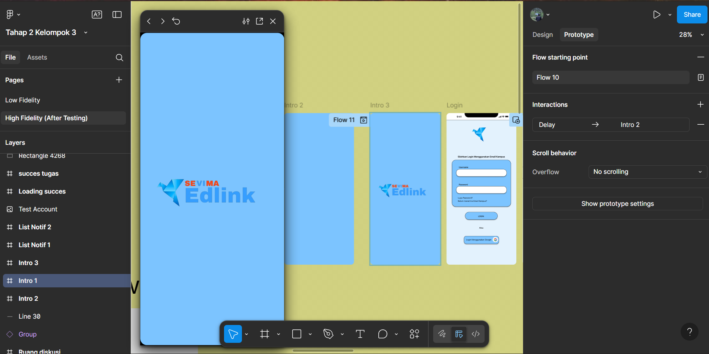
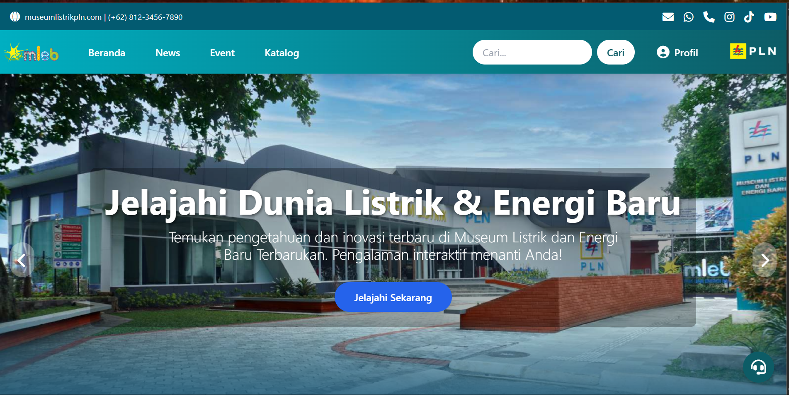
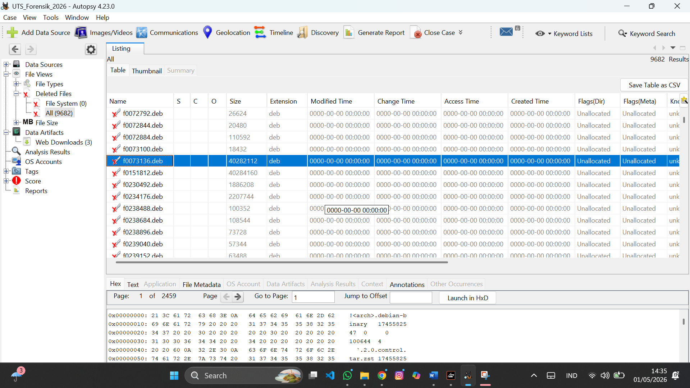
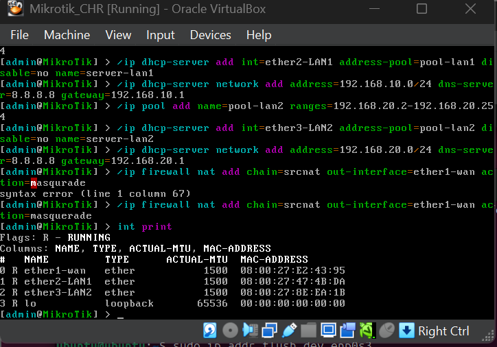
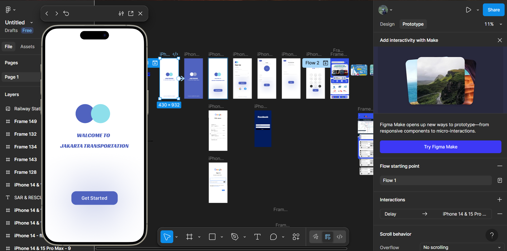
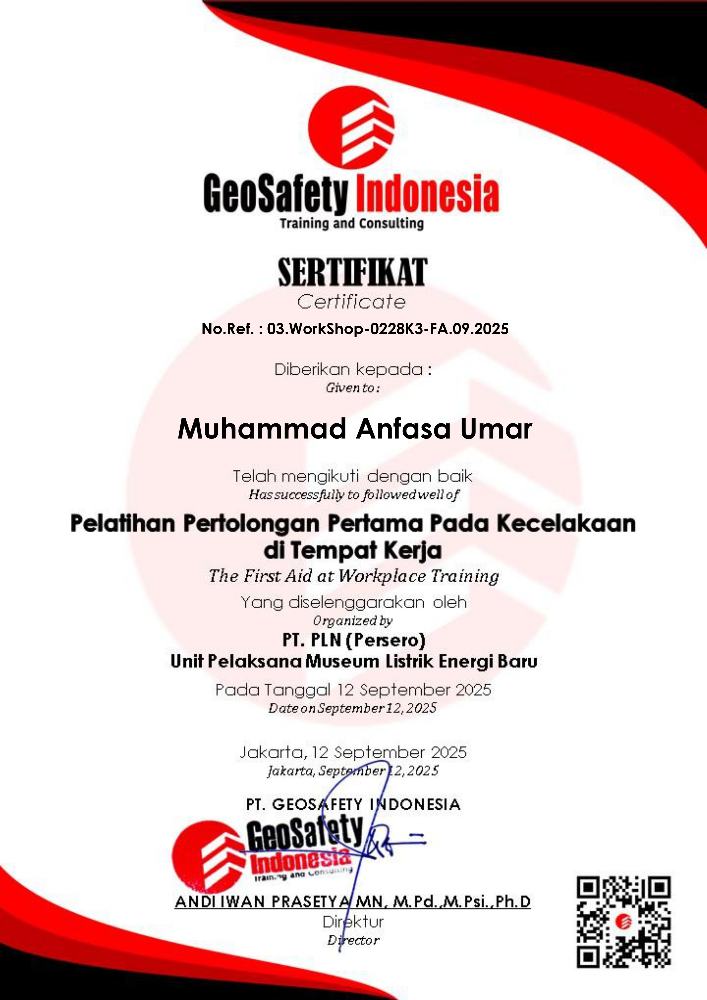
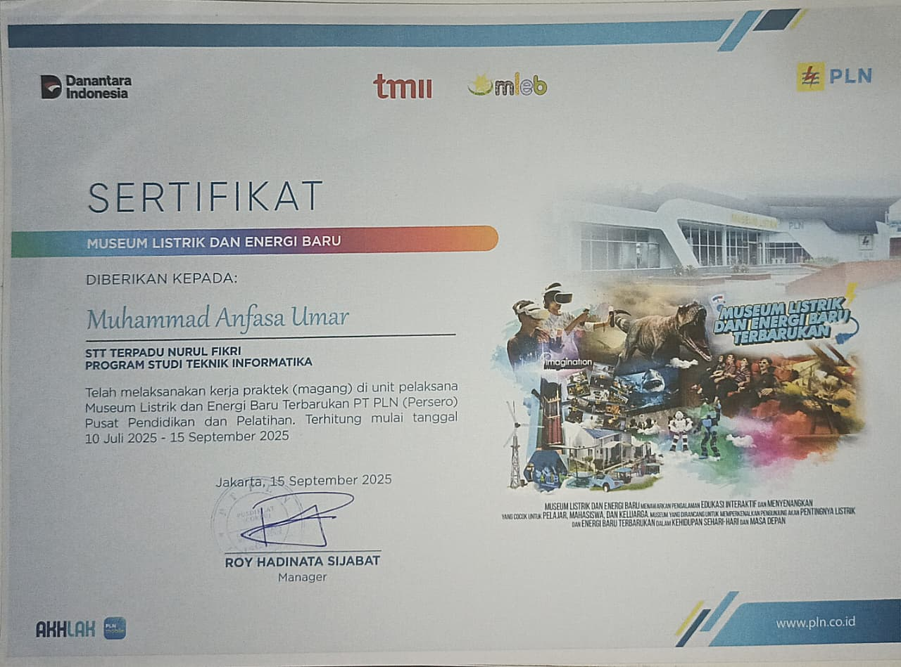

EdLink Management System
Optimasi dan integrasi platform pembelajaran digital untuk efisiensi manajemen data akademik.
View DetailsMahasiswa Teknik Informatika di STT Terpadu Nurul Fikri dengan spesialisasi sistem infrastruktur jaringan. Berpengalaman dalam mengelola aspek teknis dan strategis di organisasi serta proyek bisnis.
Ahli dalam perancangan, instalasi, dan perawatan jaringan internet (Indoor & Outdoor) dengan stabilitas tinggi.
Membangun antarmuka web yang modern dan responsif, berorientasi pada kebutuhan klien untuk pengalaman pengguna yang optimal.
Layanan teknis profesional untuk perbaikan dan pemeliharaan Laptop, PC, Smartphone, hingga perangkat Printer.
Berpengalaman memimpin tim dalam organisasi kampus (BEM) dan manajemen proyek teknologi sebagai CTO.
Mampu menerjemahkan kebutuhan teknis klien menjadi solusi visual yang fungsional dan memuaskan.
Analisis cepat dan tepat dalam menangani troubleshoot hardware maupun investigasi keamanan siber.
Terbiasa mengelola timeline acara besar dan memastikan delivery proyek tepat waktu.

Optimasi dan integrasi platform pembelajaran digital untuk efisiensi manajemen data akademik.
View Details
Pengembangan antarmuka website informatif untuk PT PLN menggunakan Tailwind CSS.
View Live Site
Analisis bukti digital menggunakan FTK Imager dan Autopsy untuk investigasi file terhapus.
View Report
Simulasi jaringan aman menggunakan VirtualBox dan MikroTik CHR untuk pengujian firewall.
View Topology
Rancang bangun aplikasi berbasis web untuk digitalisasi layanan transportasi umum Jakarta.
View Project (1).png)
Bertanggung jawab penuh dalam memimpin manajemen proyek dan koordinasi antar divisi debat publik skala kampus.

Sertifikat kompetensi K3L sesuai regulasi dan standar keamanan kerja nasional.

Penghargaan atas dedikasi membangun sinergi dengan masyarakat melalui aksi pengabdian berkelanjutan.

Penghargaan atas gagasan kreatif menganalisis gaya hidup dan pola makan sehat bagi Generasi Z.

Pengembangan antarmuka web dan pemeliharaan infrastruktur IT untuk operasional museum.

Koordinasi teknis pelaksanaan prosesi pelantikan formal seluruh pimpinan Unit Kegiatan Mahasiswa.
Tertarik bekerja sama atau ada pertanyaan? Jangan ragu untuk menghubungi saya.